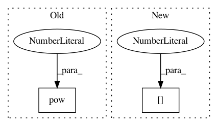

eb110220d9a39a294479433cefc274e42506737e,main.py,,main,#,75
Before Change
returns[step] = returns[step + 1] * \
args.gamma * masks[step] + rewards[step]
value_loss = (values[:-1] - Variable(returns[:-1])).pow(2).mean()
advantages = returns[:-1] - values[:-1].data
action_loss = -(Variable(advantages) * action_log_probs).mean()
After Change
episode_rewards *= masks[step].cpu()
returns[-1] = actor_critic(Variable(states[-1], volatile=True))[0].data
for step in reversed(range(args.num_steps)):
returns[step] = returns[step + 1] * \
In pattern: SUPERPATTERN
Frequency: 3
Non-data size: 2
Instances
Project Name: ikostrikov/pytorch-a2c-ppo-acktr
Commit Name: eb110220d9a39a294479433cefc274e42506737e
Time: 2017-09-16
Author: ikostrikov@gmail.com
File Name: main.py
Class Name:
Method Name: main
Project Name: lcswillems/torch-rl
Commit Name: 77aa13468aeac44d28bec7928c4264d198d3588e
Time: 2018-04-11
Author: lcswillems@gmail.com
File Name: core/a2c.py
Class Name:
Method Name: a2c_step
Project Name: IBM/adversarial-robustness-toolbox
Commit Name: 79ee6153cee9c16191e3d6ad4be54a8205ed5ed0
Time: 2017-07-12
Author: valentina.zantedeschi@ibm.com
File Name: src/attackers/deepfool.py
Class Name: DeepFool
Method Name: generate